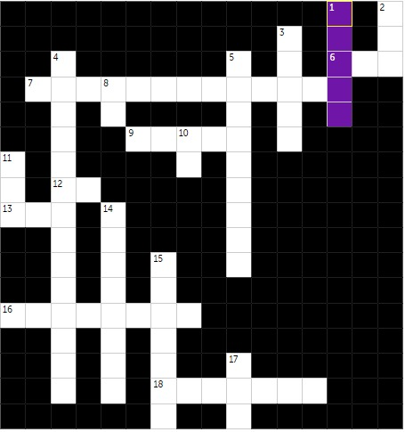

Embora seja uma EEPROM.É um tipo de memória com características muito semelhantes a memória RAM só tem apenas um diferencial que é fato de ela não ser volátil. Ela preserva os dados por um longo período sem precisar de uma alimentação elétrica.